Logo Design
Community Project
Overview
Project goal: Bringing school spirit to life
Project duration: November 2017 - August 2018
In the winter of 2017, four of my lifelong friends and I decided we wanted to design and create something that would help cultivate and display the strong community spirit that we grew up surrounded by. We were proud of the school system we belonged to, and we wanted to give back to the community that had always supported us. It was easy to notice that the exterior of our highschool did not quite exemplify the strong spirit that existed within the school, and we wanted to change that. Our plan: create an LED sign with our school logo that could act as a landmark when students enter the school and attend sporting events.
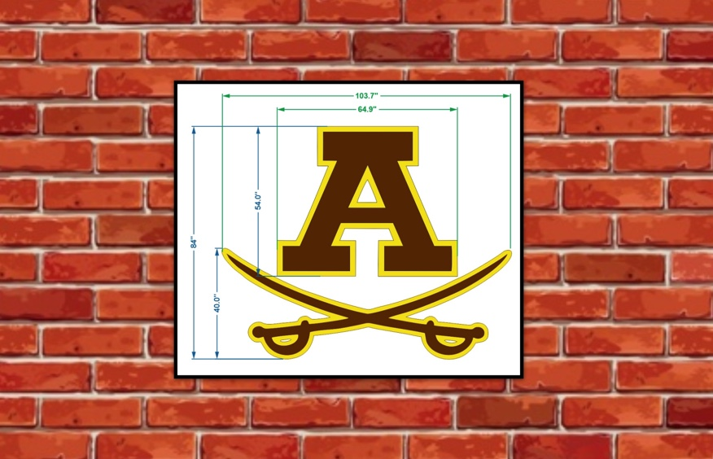
Request for Proposal
Our first plan of action was to seek approval from our school's Board of Education, and uncover any potential details or problems that may change the course of our project. We presented our idea and while we gained the immediate support from Adams, we were notified that all fundraising and project coordination would be completely in our hands.
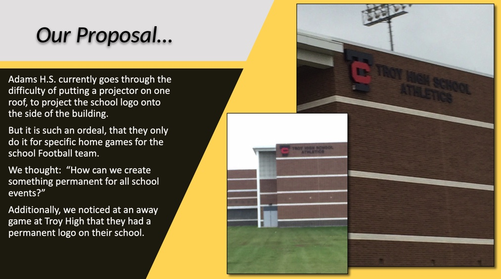
Research
Upon obtaining approval from the school, we began looking into different mockups, potential outsourcing options, and outlining how we were going to fundraise for a sign that would cost thousands of dollars. While we recognized we would not have the ability to physically create the sign ourselves, we wanted to ensure the company we chose would allow us to be engaged in the production process from start to finish.
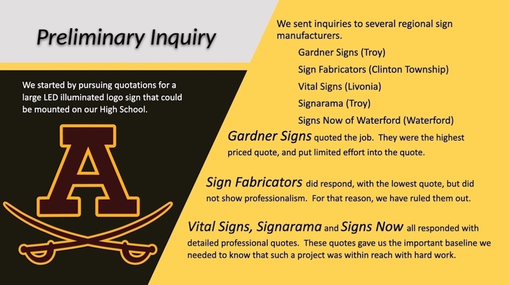
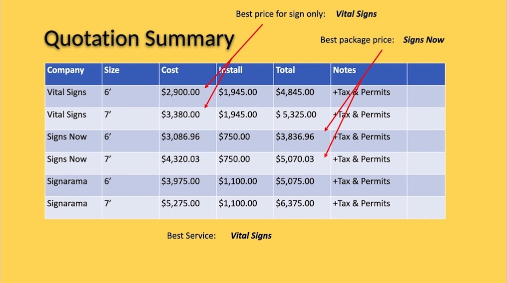
Location 1:
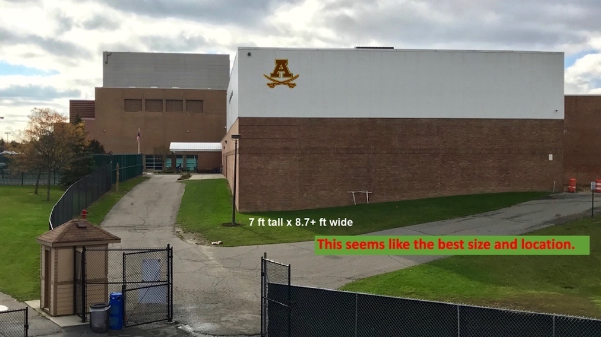
Location 2:
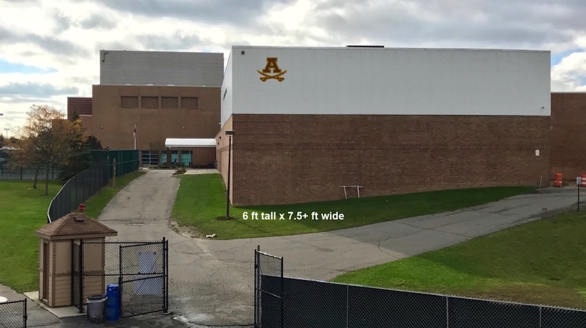
Location 3:
Location 4:
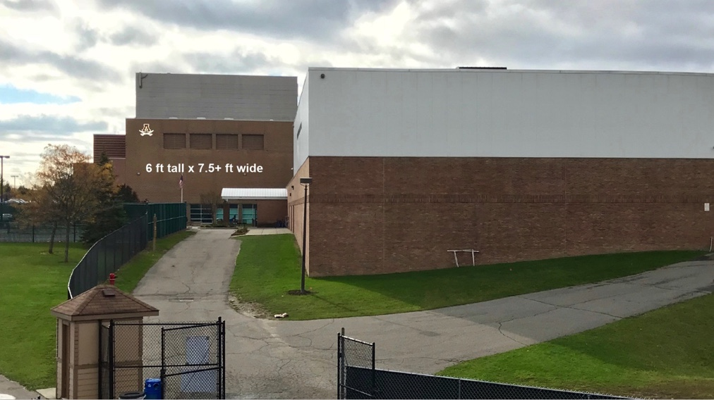
Action
As proud members of our school's soccer team, we decided it would be a great idea to host an indoor-soccer tournamnet, where all proceeds would go towards construction of the sign. To reach out to students and raise awareness of our efforts, we created a Twitter account and detailed information about the tournament. Through coordination with our principal and athletic director, we were able to successfully host the tournament and raise over $2000.
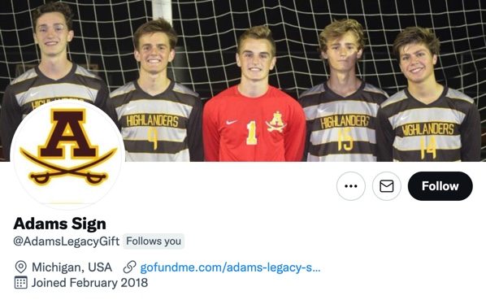
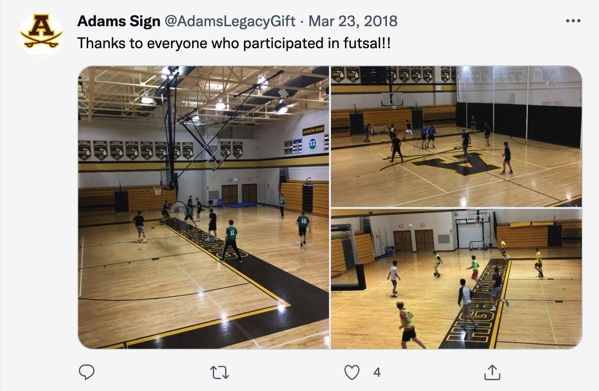
After hosting the tournament and highlighting our school's interest, we were able to schedule a meeting with the community PTSA and Athletic Boosters. After presenting our case, we were delighted to hear they were eager to back the funding for the rest of the sign and installation cost.
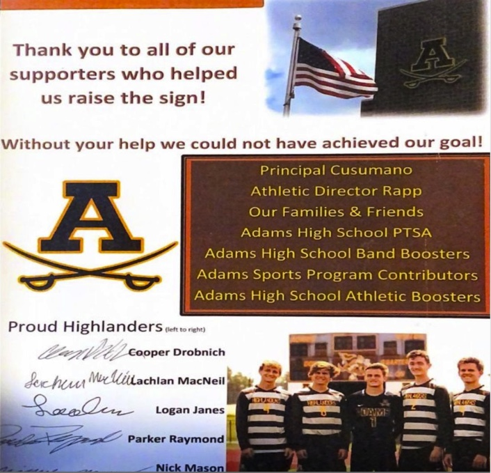
Result
After nearly a year of planning, failing, and persistence, we were able to see the installment of the LED sign displayed proudly on our school. I will be forever thankful that I was apart of this community project and that I was able to design something that will last a lifetime.Below are some photos of the LED sign before and after installation. At night, it can be seen glowing from a mile away!
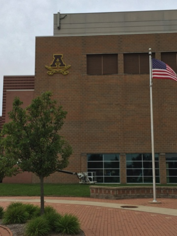
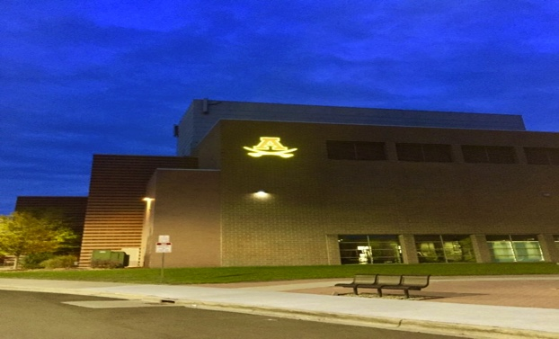
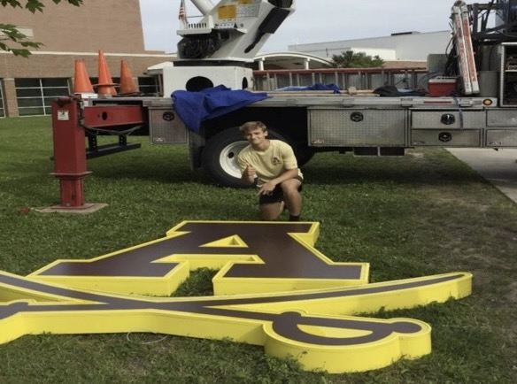
Acknowledgements
Below is a link to an article published in The Oakland Press“These exceptional young men from the class of 2019 are leaving a legacy of greatness,” said Adams High School Principal Pasquale Cusumano. “They wanted to enhance the spirit and school culture of Adams for many years to come. Their work lights up the Adams building from dusk ’til dawn every night. It brings a smile to my face and a sense of pride to be part of this community. This is Highlander pride.”